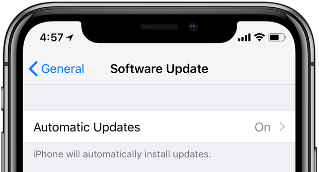
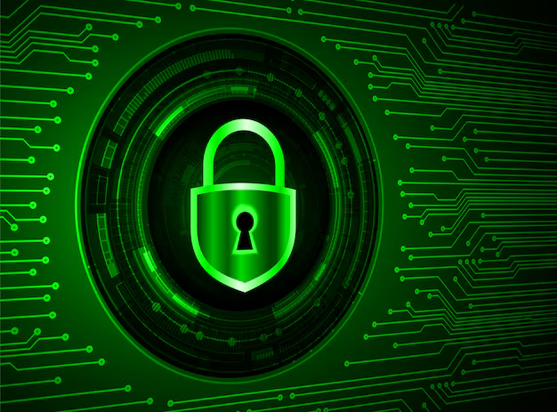

Twee-factor-authenticatie
Wellicht heb je het al eens meegemaakt: je wilt inloggen, dus je typt je e-mail en wachtwoord in, maar daarna moet je ook nog eens een code invullen die naar je telefoon wordt gestuurd. Je zou misschien denken dat dit onnodig veel werk oplevert, maar het draagt significant veel bij aan de veiligheid van jouw account. Twee factor-authenticatie, ook wel 2FA genoemd, is een authenticatiemethode waarbij de gebruiker met 2 of meer factoren zijn identiteit aantonen. Bij het succesvol afronden van de twee factor-authenticatie mag de gebruiker inloggen. Waarom is dit handig? Stel je voor dat een hacker je wachtwoord weet, dan kan hij nog steeds niet in jouw account, want ze hebben immers de code niet, die naar jouw telefoon is gestuurd. Een makkelijke manier om jouw account extra veilig te maken! Je kunt 2FA aanzetten bij bijna alle bekende apps en websites, zoals TikTok, Instagram, Google en soms bij bepaalde games. Advies is om het gewoon te doen, aangezien het maar een paar seconden extra kost, maar het vermijdt een hoop hackers.
Een sterk wachtwoord
Het is moeilijk om een wachtwoord te onthouden. Het is daarom voorkomen begrijpelijk dat je een makkelijk wachtwoord kiest: “123456” of “hans2008” zijn wachtwoorden die je makkelijk onthoudt. Maar omdat het een makkelijk wachtwoord is, betekent dat ook dat het makkelijk te raden is voor een hacker. Een goed wachtwoord moet moeilijk te raden zijn, maar nog wel te onthouden voor jou. Voor een sterk wachtwoord hebben we deze tips:
- Gebruik hoofdletters, kleine letters cijfers en symbolen: Dus “voetbal2008” wordt “VoetBal2008”, al iets sterker
- Maak jouw wachtwoord minstens 10 tekens lang.
- Gebruik geen persoonlijke informatie, zoals je naam, geboortedatum, school etc.
- Verzin een leuke zin, waar je letters vervangt met cijfers zoals: ‘’hebIk9b0tt3rh4mmen0p?’’
Als je dan eindelijk een sterk wachtwoord hebt bedacht, gebruik deze dan niet op elke website! Stel je voor, een hacker raadt een wachtwoord: dat betekent dat hij gelijk toegang heeft tot al jouw accounts!
Check hier of jouw bedachte wachtwoord veilig is!
Zorg dat je apparaten up-to-date zijn
Je kent het wel, je zit lekker op je laptop of telefoon en ineens wordt er gevraagd of je een update wilt installeren. Vaak klikken we dan al snel op “Later” omdat we geen zin hebben om onderbroken te worden. Maar eigenlijk is dat geen goed idee. Waarom is dat geen goed idee? Omdat hackers altijd op zoek zijn naar verschillende zwakke plekken in software. Als software-uitgevers deze zwakke plekken ontdekken, brengen ze zo snel mogelijk een nieuwe update uit zodat deze plekken worden gerepareerd. Als jij dan die updates niet installeert, dan kunnen hackers nog steeds jou hacken door die oude zwakke plekken. Dus, als jij de volgende keer een update-melding ziet, klik dan gewoon op ‘’nu installeren''. Als je dat niet doet, weet je dat je meer kans hebt om gehackt te worden.
Gebruik antivirus en firewall
Een antivirusprogramma is eigenlijk jouw digtale bodygoard: hij checkt constant of er virussen of andere gevaarlijke bestanden aanwezig zijn Als die er zijn, verwijdert hij deze. Heel belangrijk dus, want je zou dit zelf nooit de hele dag door doen! Een firewall lijkt op een antivirus, maar hij werkt op een ander niveau. Het is een muur tussen jouw telefoon of laptop en het internet. Dan bepaalt hij welke verbindingen er wel of niet binnen mogen komen. Als een hacker dan door de muur probeert heen te komen, houdt de firewall hem tegen. Gelukkig hebben de meeste apparaten al standaard een firewall en antivirus. Dat is dan ook de reden dat jouw laptop ineens heel hard bezig is terwijl jij heel weinig erop doet: de antivirus is druk bezig met het checken van jouw bestanden. Toch is het belangrijk dat je checkt of je deze hebt preinstalleerd. Zo niet, dan zijn er genoeg andere (vaak gratis) antivirusprogrammas.
Pas op voor phishing
Misschien heb je het wel eens meegemaakt, je krijgt een bericht van een onbekend nummer die jou informeert dat je een openstaande schuld hebt die niet is voldaan. Omdat je nog nooit iets hebt geleend, weet je dat dit niet klopt. Maar stel, je had wel iets geleend, had je er dan op geklikt? Dit is een manier van phishing. Phishing is een manier waarop hackers je proberen te foppen. Ze sturen je bijvoorbeeld een nepbericht, zoals die van een schuld of soms zelfs een vriend! In zo’n bericht staat vaak een link, als je daar dan op klikt, dan kom je op een website die je wachtwoord steelt of een virus downloadt. Niet fijn dus. Maar het is makkelijk om phishing te voorkomen, je kan bijvoorbeeld letten op de volgende kenmerken:
- Kijk naar het e-mailadres of telefoon van de afzender: komt het overeen met het e-mailadres en telefoonnummer wat op de officiele website van de instantie staat?
- Let op spelfouten in de tekst, vaak zijn de teksten slecht vertaald of verkeerd overgenomen.
- Klik niet zomaar op links, ook scan je niet zomaar QR-codes.
- Als je twijfelt, vraag het dan aan je ouders of leraar.
Wees vooral niet bang om nee te zeggen tegen onbekende berichten, als iemand jouw dringend nodig heeft dan zouden ze je wel fysiek opzoeken. Het internet is een plek vol met leuke dingen, je kan samen met je vrienden gamen, chatten en bellen. Maar het is ook een plek vol met hackers. Je hoeft geen internet-guru te zijn om jezelf te beschermen. Met 2FA, sterke wachtwoorden, up-to-date software, antivirus en jouw gezonde verstand kom je al een heel eind!
Doe hier het Phising-Detector spel!